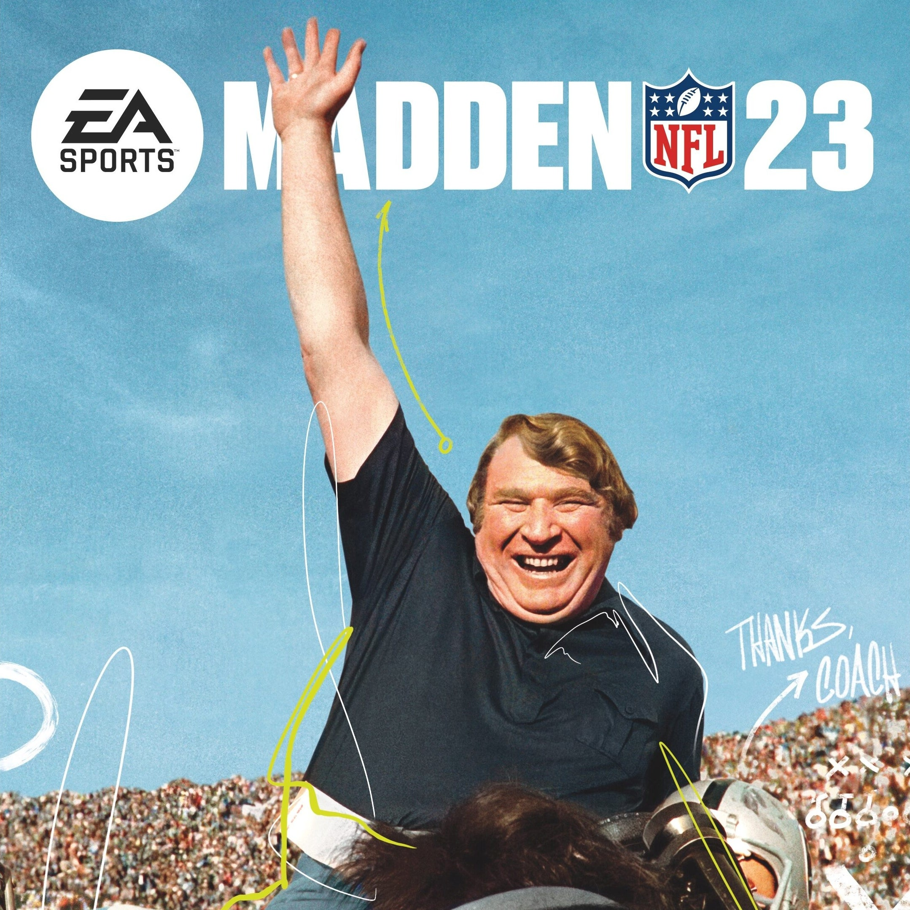

I am Jarrett Ledbetter. I attend The University of Incarnate Word for my higher education. At UIW I am pursuing a degree in Cyber Security Systems.
I was in mulitple sports in high school. I played football where I played D-line. I ran track where my events were the hurdles. My last sport was powerlifting. I also in enjoy watching soccer and college football on the weekends. Below is one of my favorite sports memories.
For Entertainment I watch yotube vidoes or tv shows.I also play video games like Call of Duty or Madden.
